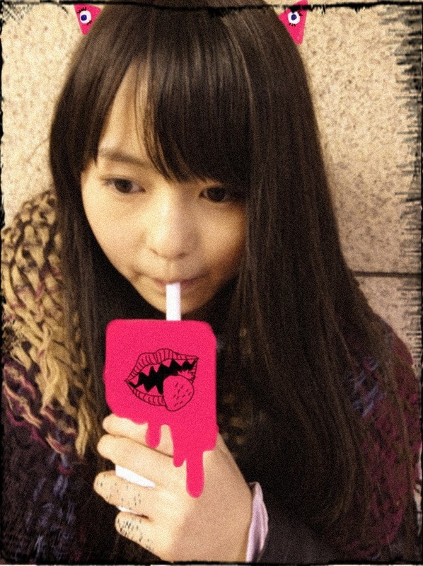

| 2012/02 02 Thu | 67回目*marika |
いつも読んでくださってる方、
初めて読んでくださった方、
コメントしてくださった方、
ありがとうございます＊
......................
・べびたんの特技は何かな？
*****
実はお絵描きだったりするの...!
書道とか、バレエとか、、、ね。
踊ることがすき。
あと舌を３つに分けるのと
変な顔ね。笑
・ベビたんは握手会とかで来る人の
ファッションってチェックしてるのかな？
ベビたん的に採点とかしてくれたりする？
*****
しないです><
採点.....!!そんなのする程の者ではないので...
・スポーツ観戦とかは好き？
*****
1回だけ、野球観に行ったことありますっ
家族で阪神タイガース応援!!
TVではフィギュアスケート観たりします^^
・実はね
忘れない限りブログ開設から
毎日メンバー全員の記事にコメしてるんだけど…
知ってた？
*****
お疲れさまです!!
いつもコメントしてくださって
ありがとうございます＊
とてもうれしいですが、
無理しないでください><
・まりちゃんの地元の方言ってある？
俺、方言でるとちょっと恥ずかしいんだよ(笑)
テンション上がると｢でら｣とか使っちゃう
だから普通に話す時は標準語にしてる(笑)
*****
「でら」!!
かわいいじゃないですか〜:D♡
私も大阪出身神奈川育ちなのですが
（今は神奈川出身です^^）
なかなか関西弁抜けなくて
というかおとうちゃんがまだバリバリやからね。笑
標準語と関西弁が混じった
気持ちわるいしゃべり方なんです;(
でも、やっぱり方言すごく良いし、
全く恥ずかしくないと思う☆
逆に方言がない人は憧れてたりするみたいですよ!!
・今年のバレンタインは寂しいσ(^_^;)
まりちゃんの明治手作りチョコくれませんか？(笑)
*****
えっへ〜
どおしよっかな~♪←
じゃあ、まりかの愛のこもったチョコを...♡
ちて:P
みなさんに渡したいなあ....
いつも優しくて応援してくださるみなさんに
感謝もこめて。
・全握って ベビたん 来る？(´＾ω＾｀)
*****
....かもしれない♪♪
でへっ
・長さストレートだとどのくらいの長さあるの??(´Д｀)
*****
胸の下あたりまであります＊
けっこう長いのよ^^
・質問にちゃんと答えてくれる
まりかちゃん大好き♪
あ…｡女の子に大好き
って言われるのは引いちゃう??
*****
まさかまさかまさかっっっっ
うれしすぎてどう表現したら
いいのか分からないですよ><
ぎゅーてしたいです。
もっと好きにさせるもんね♡♡
・今何かドラマ見てる？
好きなのあったら教えて＾＾
*****
好きなドラマは
「ハチミツとクローバー」
です＊＊＊
・まりかはマインスイーパーやったことある？？
*****
やったことない><
けんさくんしてみます☆
・ベビたんはないのか
十八番ソングがあると便利だと思うよ
*****
一応いろいろ歌うのですが><
でも十八番って言えるほどでもないんですよ; ;
今、椎名林檎さん覚えてます:D!!
・いつかはベビたんも写真集出すのカナ？
ベビたんの写真集とかめちゃくちゃお洒落そう(*ﾟ∀ﾟ)
*****
いつか出せたらいいなあ。
・写真の落書きって手で描いてるの？
・べびたんって画像の編集がすごい！！
どうやってやってるの？
専用のアプリとかあったら教えてください--＾＾
*****
はい!!自分で描いてます^^*
いや〜ありがとうございます♡てれ
落書き楽しいのよ。
アプリは『スケッチ』ですー
・まりり最近自撮りに
磨きがかかってるよね(*´･Q･｀*)!
*****
最近自撮りのしゃしん載せまくりですxO
メンバーとしゃしんを撮りたいのですが
撮り逃すこと多くて...><
すんません!!今日も自撮り載せます><
・ばぶたんはイルカと泳いだことある？？
めっちゃ楽しいよっ！
*****
ちっちゃい頃にグアムで
イルカとふれあったことあります!!
一緒に泳いだはないです。
絶対楽しいだろ-な-♪
・まりかは他のメンバーのモノマネしないのー？
握手会でやってもらいたいなーとかｗｗ
*****
かずみんととまとのまねできますよ笑
メンバーからは似てないって不評だけどね!!ぇ
かずみんの前で
肘こすりながら「かずみはねっあのですねっ」
てまねしたら
「ベービたん、そぉれ全然似てないよっ
メンバーん中でベビたんがいちばんできてなぁいよっ」
てかずみんに言われます。
う〜ん、似てると思うんやけどなあ。
とまとのまねしたら
とまとはきゃははって笑ってくれます。
似てるかわからんです^^
・ぽちっとなと、そのボタンを押したらどうなるの？
*****
スイッチおんっ
うぃーんがっしゃびゅびゅびゅいーんがしゃん
・他メンバーはインフル大丈夫かな？
*****
今の所は大丈夫だと思いますっ。
でも、風邪が流行ったので
何人かは声が少しかれてたりもしてました。
もうほとんど治ってたけど*
あぁ〜まあやが心配;(
今日はここまで＊
......................
＊＊＊
33人のクリエイター×乃木坂46
ショートムービーのダイジェストが公開されてます。
個人PVです。
これは本当にすごいことだと思います。
撮影は本当に大変だったけど
本当に楽しかったしとても良い経験ができました。
私の作品は
柳沢翔監督×伊藤万理華
『ナイフ』
すんごいかっこ良い作品になってて...
観たときはびっくりしました。
私１人のために沢山のスタッフさんが
ついてくださいました。
本当に素晴らしい作品になっています。
ああーーー....
これ以上言ったらネタバレになっちゃうから
22日のお楽しみです♪
早くみなさんに観てほしいな!!
＊＊＊
今日ダンスの練習の帰りに
ねねがね、ちっちゃい牛乳買って
ちゅーちゅー飲んでたんですよ。
もう、その姿見て笑っちゃたよ笑
私はイチゴのジュース飲みましたぁ!
ミキサーにかけた感じのジュースおいしかった。

耳に目とか描いてみた° v°
みなさん、今日もお疲れさまりかです。
早く会いたいな〜....
明日も頑張りまりか☆
では、おでこがこんにちはしゃしんで
ばいばい:D

はずかちいからちっちゃいしゃしん。
あっ!!!!
幼いとかは禁句ねっっっ


ベビたん*****bA by marika